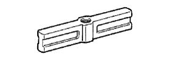

ТОПЛИВНЫЙ НАСОС ВЫСОКОГО ДАВЛЕНИЯ > СНЯТИЕ > Подготовка

| 09213-14010 | Crankshaft Pulley Holding Tool | |
| (91651-60865) | Bolt | |
 | 09330-00021 | Companion Flange Holding Tool |
 | 09950-50013 | Puller C Set |
|  | (09951-05010) | Hanger 150 |
 | (09952-05010) | Slide Arm |
 | (09953-05010) | Center Bolt 100 |
| (09954-05021) | Claw No. 2 |
| Контейнер | - |
| Латунная щетка | - |
| Индикатор часового типа с магнитной подставкой | - |
| Ручной испытательный прибор для топливной форсунки | - |
| Плоскогубцы | - |
| Динамометрический ключ | - |
| Деревянный пруток | - |
 | 09013-7C400 | Набор ключей | - |
 | 09017-1C130 | Разрезная головка 17 мм | - |
 | 09082-00040 | Электрический диагностический прибор TOYOTA | - |
 | (09083-00150) | Комплект проводов для диагностического прибора | - |